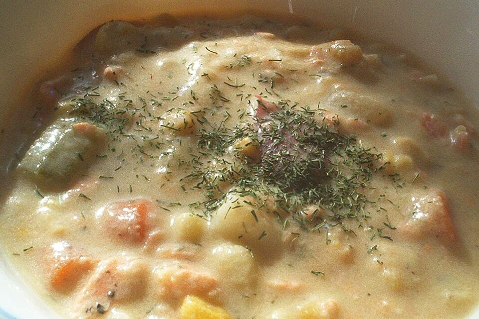

Salmon Chowder

Description
This is how you would make a delicious tasting Salmon Chowder
Ingredients
- 3 tablespoons butter
- ¾ cup chopped onion
- ½ cup chopped celery
- 1 teaspoon garlic powder
- 2 cups diced potatoes
- 2 carrots, diced
- 2 cups chicken broth
- 1 teaspoon salt
- 1 teaspoon ground black pepper
- 1 teaspoon dried dill weed
- 2 (16 ounce) cans salmon
- 1 (12 fluid ounce) can evaporated milk
- 1 (15 ounce) can creamed corn
- ½ pound Cheddar cheese, shredded
- Melt butter in a large pot over medium heat. Saute onion, celery, and garlic powder until onions are tender. Stir in potatoes, carrots, broth, salt, pepper, and dill. Bring to a boil, and reduce heat. Cover, and simmer 20 minutes.
- Stir in salmon, evaporated milk, corn, and cheese. Cook until heated through.